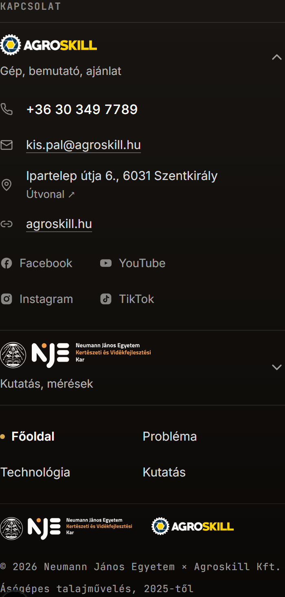

Mindhárom változatból kimarad az oldalak felsorolása (a felső menü és a „Következő oldal” kártya már ott van), és a logók sem ismétlődnek. Az asztali lábléc változatlan marad. A keret tetején a „Következő oldal” kártya vége látszik, alatta a lábléc.
Egy arany hívógomb a számmal, alatta két halk gomb (E-mail, Útvonal). A közösségi oldalak csak ikonként, a weboldal mellett. Ikon csak a gombokban van.
Nincs egy ikon sem: a telefonszám nagy, Fraunces betűs, a többi sor sima, aláhúzott szöveg. A közösségi oldalak egy szöveges sorban. Mindkét partner mindig látszik.
Felül egy kétállású kapcsoló (Agroskill / NJE KVK), alatta csak a választott partner adatai, címkézett sorokban, ikonok helyett TEL / E-MAIL / CÍM / WEB. A közösségi ikonok egy sorban.

Lenyitható Agroskill-sor 8 ikonnal (telefon, e-mail, cím, web + 4 közösségi), lenyitható NJE-sor, négy oldallink, a két logó még egyszer, és két sor ©.